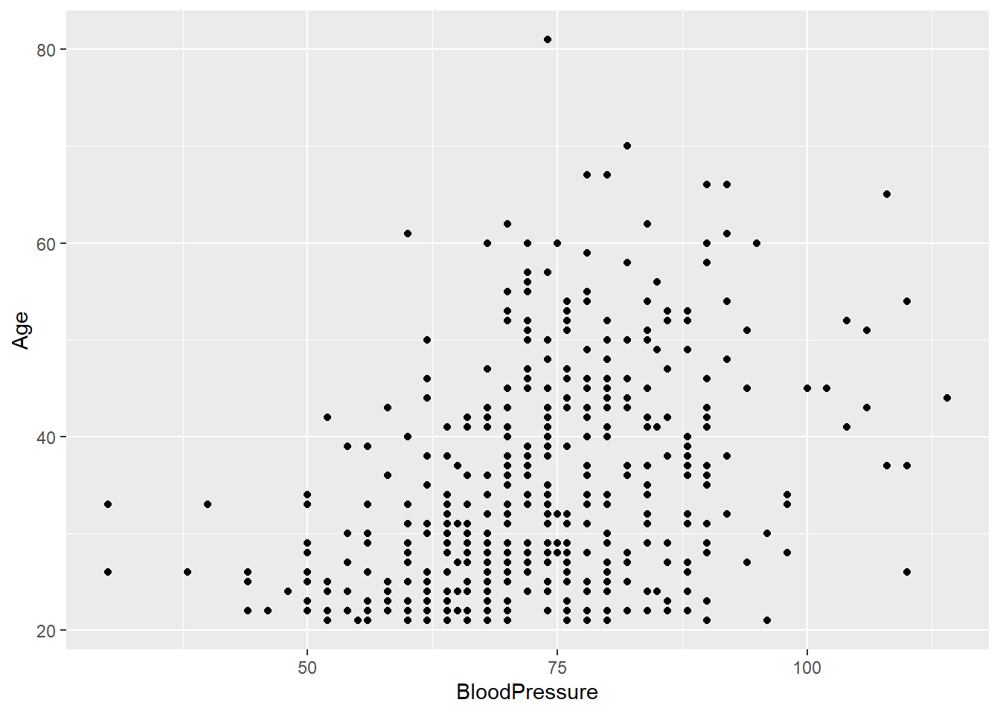
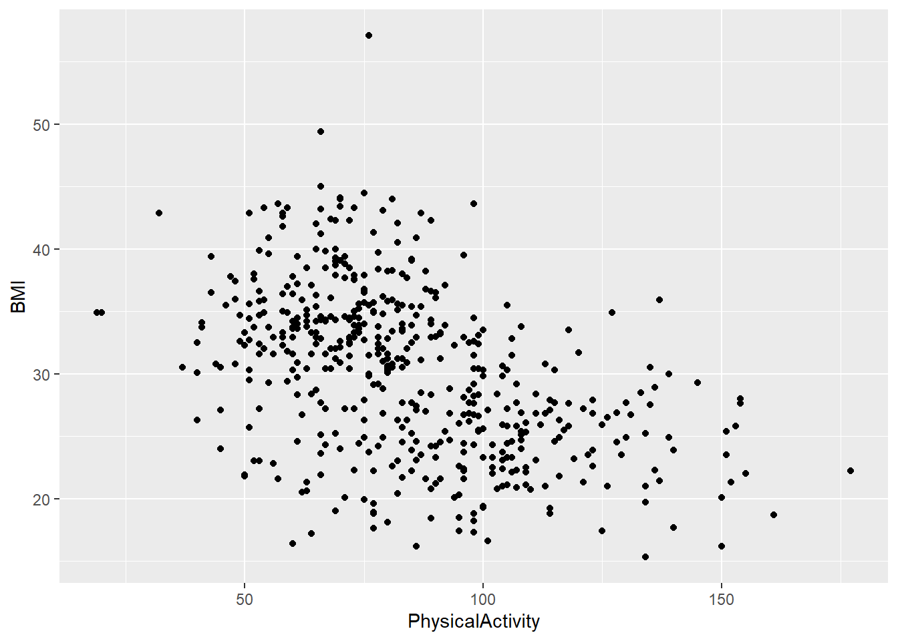
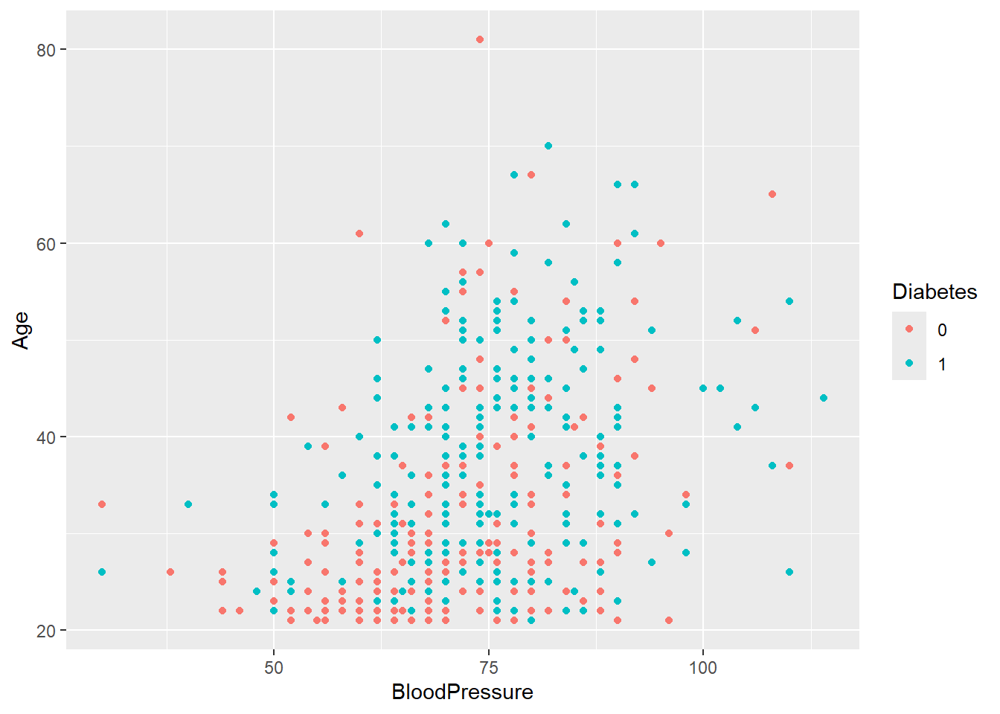
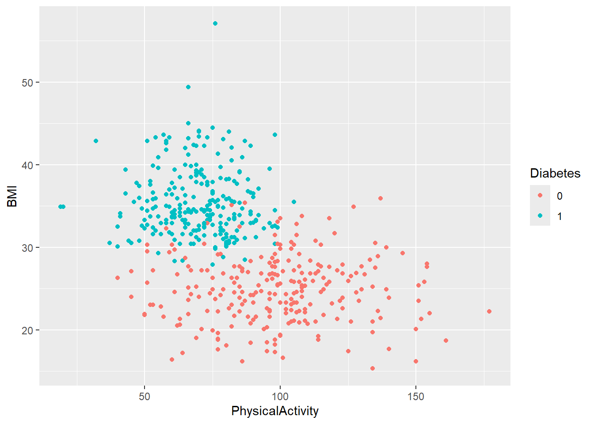
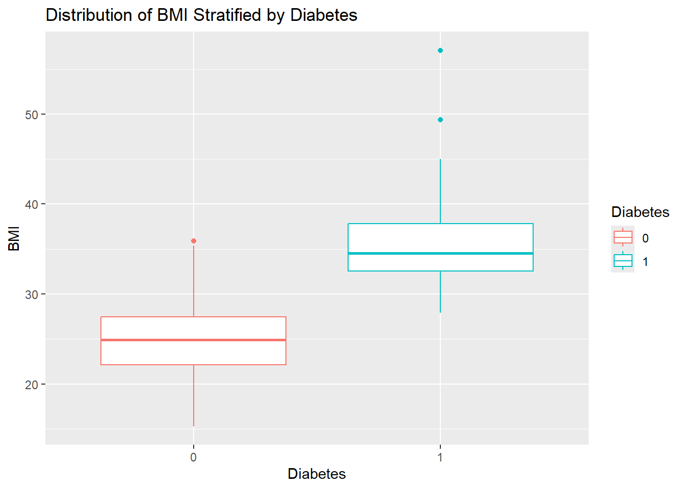
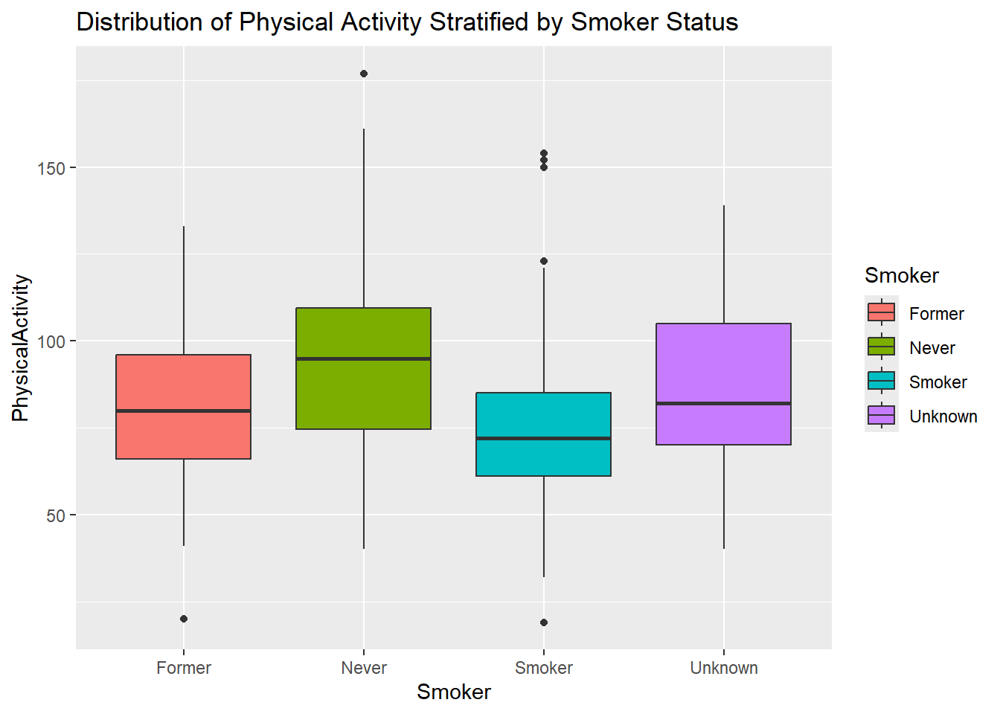
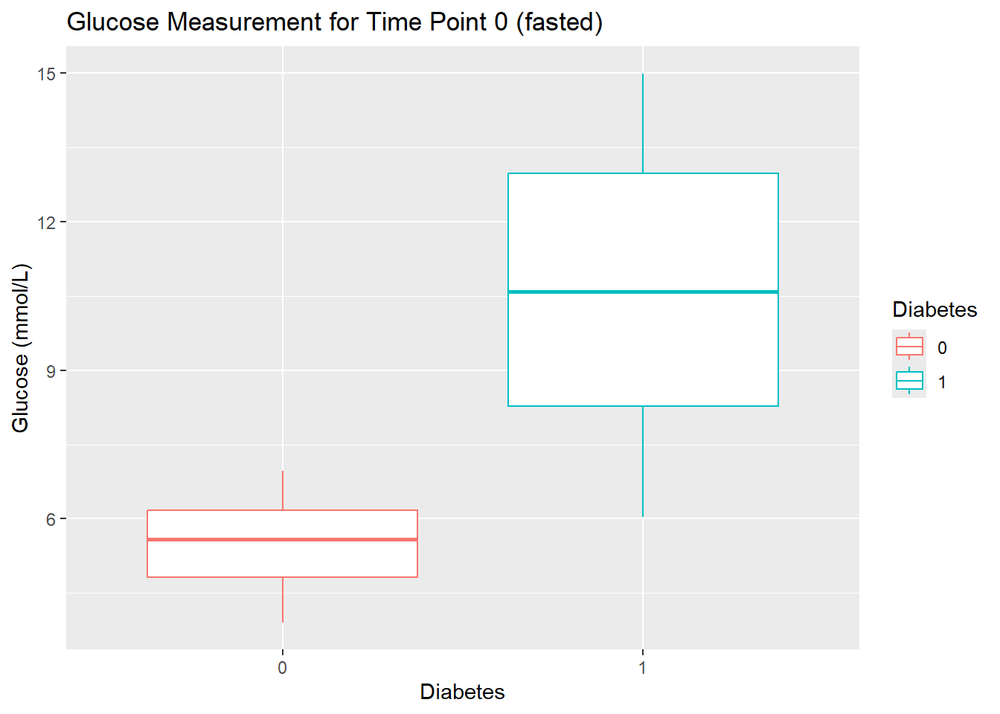
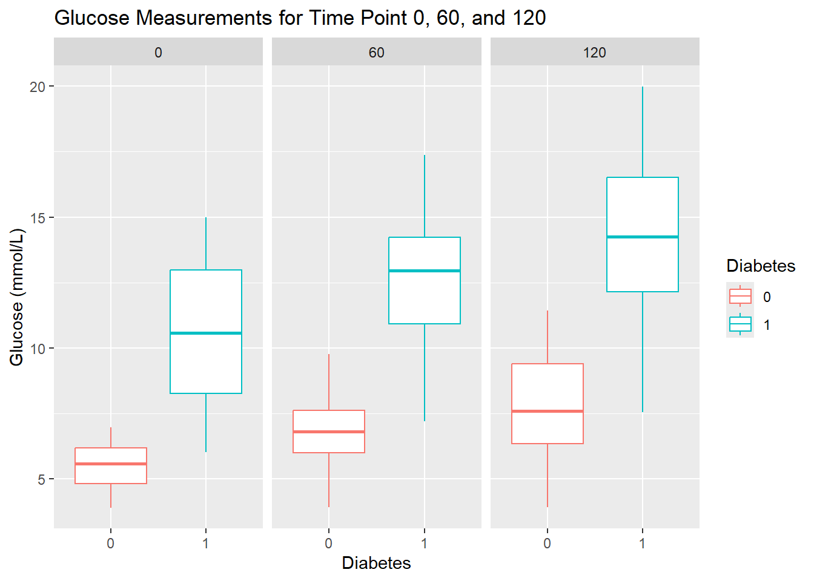

library(tidyverse)Exercise 3 - Solutions: ggplot2
Getting started
- Load packages.
- Load data from the
.rdsfile you created in Exercise 2. Have a guess at what the function is called.
diabetes_glucose <- read_rds('../out/diabetes_glucose.rds')Plotting - Part 1
You will first do some basic plots to get started with ggplot again.
If it has been a while since you work with ggplot, have a look at the ggplot material from the FromExceltoR course: https://center-for-health-data-science.github.io/FromExceltoR/Presentations/presentation3.html.
- Create a scatter plot of
AgeandBlood Pressure. Do you notice a trend?
diabetes_glucose %>%
ggplot(aes(x = BloodPressure,
y = Age)) +
geom_point() 
- Create a scatter plot of
PhysicalActivityandBMI.Do you notice a trend?
diabetes_glucose %>%
ggplot(aes(x = PhysicalActivity,
y = BMI)) +
geom_point() 
- Now, create the same two plots as before, but this time stratify them by
Diabetes. Do you notice any trends?
Hint
You can stratify a plot by a categorical variable in several ways, depending on the type of plot. The purpose of stratification is to distinguish samples based on their categorical values, making patterns or differences easier to identify. This can be done using aesthetics like color, fill, shape.
diabetes_glucose %>%
ggplot(aes(x = BloodPressure,
y = Age,
color = Diabetes)) +
geom_point()
diabetes_glucose %>%
ggplot(aes(x = PhysicalActivity,
y = BMI,
color = Diabetes)) +
geom_point() 
- Create a boxplot of
BMIstratified byDiabaetes.Give the plot a meaningful title.
diabetes_glucose %>%
ggplot(aes(y = BMI,
x = Diabetes,
color = Diabetes)) +
geom_boxplot() +
labs(title = 'Distribution of BMI Stratified by Diabetes')
- Create a boxplot of
PhysicalActivitystratified bySmoker. Give the plot a meaningful title.
diabetes_glucose %>%
ggplot(aes(y = PhysicalActivity,
x = Smoker,
fill = Smoker)) +
geom_boxplot() +
labs(title = 'Distribution of Physical Activity Stratified by Smoker Status')
Plotting - Part 2
In order to plot the data inside the nested variable, the data needs to be unnested.
- Create a boxplot of the glucose measurements at time 0 stratified by
Diabetes. Give the plot a meaningful title.
diabetes_glucose %>%
unnest(OGTT) %>%
mutate(Measurement = Measurement %>% as.factor()) %>%
filter(Measurement == 0) %>%
ggplot(aes(y = `Glucose (mmol/L)`,
x = Diabetes,
color = Diabetes)) +
geom_boxplot() +
labs(title = 'Glucose Measurement for Time Point 0 (fasted)')
- Create boxplots of glucose measurements stratified by
Diabetesfor each time point (0, 60, 120) using faceting byMeasurement. Give the plot a meaningful title.
Hint
Faceting allows you to create multiple plots based on the values of a categorical variable, making it easier to compare patterns across groups. In ggplot2, you can use facet_wrap for a single variable or facet_grid for multiple variables.
diabetes_glucose %>%
unnest(OGTT) %>%
mutate(Measurement = Measurement %>% as.factor()) %>%
ggplot(aes(y = `Glucose (mmol/L)`,
x = Diabetes,
color = Diabetes)) +
geom_boxplot() +
facet_wrap(vars(Measurement)) +
labs(title = 'Glucose Measurements for Time Point 0, 60, and 120')
- Create a plot that visualizes glucose measurements across time points for each patient ID, stratified by their diabetes status. Each patient’s glucose measurements should be connected with a line, grouped by their ID, and color-coded by
Diabetes. Give the plot a meaningful title.
diabetes_glucose %>%
unnest(OGTT) %>%
ggplot(aes(x = Measurement,
y = `Glucose (mmol/L)`)) +
geom_point(aes(color = Diabetes)) +
geom_line(aes(group = ID, color = Diabetes)) +
labs(title = 'Glucose Measurements Across Time Points by Diabetes Status')
- Calculate the mean glucose levels for each time point.
Hint
You will need to use unnest(), group_by(), and summerize().
diabetes_glucose %>%
unnest(OGTT) %>%
group_by(Measurement) %>%
summarize(`Glucose (mmol/L)` = mean(`Glucose (mmol/L)`))# A tibble: 3 × 2
Measurement `Glucose (mmol/L)`
<dbl> <dbl>
1 0 8.16
2 60 9.76
3 120 11.1 - Make the same calculation as above, but additionally group the results by
Diabetes. Save the data frame in a variable.
Hint
Group by several variables: group_by(var1, var2).
glucose_mean <- diabetes_glucose %>%
unnest(OGTT) %>%
group_by(Measurement, Diabetes) %>%
summarize(`Glucose (mmol/L)` = mean(`Glucose (mmol/L)`)) %>%
ungroup()`summarise()` has grouped output by 'Measurement'. You can override using the
`.groups` argument.glucose_mean# A tibble: 6 × 3
Measurement Diabetes `Glucose (mmol/L)`
<dbl> <chr> <dbl>
1 0 0 5.59
2 0 1 10.7
3 60 0 6.78
4 60 1 12.7
5 120 0 7.73
6 120 1 14.4 This next exercise might be a bit more challenging. It requires multiple operations and might involve some techniques that were not explicitly shown in the presentations.
- Recreate the plot you made in Exercise 10 and include the mean value for each glucose measurement for the two diabetes statuses (0 and 1) you calculated in Exercise 12. This plot should lool like this:

Hint
There are several ways to solve this task. Here is a workflow suggestion:
The line in the plot symbolize a patient ID. You will need to create new IDs for the mean values that are not present in the dataset. Use
RANDOM_ID %in% df$IDto check if an ID is already present in the dataset as a patient ID. The ID’s should be added to the data frame created in Exercise 12.Data from another dataset can be added to the plot like this:
+ geom_point(DATA, aes(x = VAR1, y = VAR2, group = VAR3))You can stratify the mean glucose lines by
linetype.
The line in the plot symbolize a patient ID. Let’s find two ID’s (one for Diabetes == 0 and another for Diabetes == 1) that are not present in the dataset. We can use the same numbers as the Diabetes status for the ID’s.
0 %in% diabetes_glucose$ID[1] FALSE1 %in% diabetes_glucose$ID[1] FALSEAdd ID’s to the glucose mean data frame.
glucose_mean <- glucose_mean %>%
mutate(ID = Diabetes %>% as.double())
glucose_mean# A tibble: 6 × 4
Measurement Diabetes `Glucose (mmol/L)` ID
<dbl> <chr> <dbl> <dbl>
1 0 0 5.59 0
2 0 1 10.7 1
3 60 0 6.78 0
4 60 1 12.7 1
5 120 0 7.73 0
6 120 1 14.4 1Copy-paste the code in Exercise 10 and add lines with new data.
diabetes_glucose %>%
unnest(OGTT) %>%
ggplot(aes(x = Measurement,
y = `Glucose (mmol/L)`)) +
geom_point(aes(color = Diabetes)) +
geom_line(aes(group = ID, color = Diabetes)) +
# Glucose mean data
geom_point(data = glucose_mean,
aes(x = Measurement,
y = `Glucose (mmol/L)`,
group = ID)) +
geom_line(data = glucose_mean,
aes(x = Measurement,
y = `Glucose (mmol/L)`,
group = ID,
linetype = Diabetes)) +
labs(title = "Glucose Measurements with Mean by Diabetes Status")
ggsave('../out/figure3_13.png')Saving 7 x 5 in imagePlotting - Part 3: PCA
For this part we will use a tutorial to make a principal component analysis (PCA): https://cran.r-project.org/web/packages/ggfortify/vignettes/plot_pca.html. First, we perform some reprocessing to get the data in the right format.
- Have a look at your diabetes data set. Can you use all the variables to perform PCA? Subset the dataset to only include the relevant variables.
Hint
PCA can only be performed on numerical values. Extract these (except ID) from the dataset. It is up to you to decide whether to include the OGTT measurements. If you include them, unnest the data and convert it to wide format using pivot_wider, ensuring only glucose measurements (not time points) are included as variables in the PCA.
Extract the numerical columns, excluding the OGTT measurements.
numerical_columns <- sapply(diabetes_glucose, is.numeric)
numerical_columns['ID'] <- FALSE
diabetes_glucose_numerical <- diabetes_glucose[numerical_columns]
head(diabetes_glucose_numerical)Extract the numerical columns, including the OGTT measurements.
diabetes_glucose_unnest_wide <- diabetes_glucose %>%
unnest(OGTT) %>%
pivot_wider(names_from = Measurement,
values_from = `Glucose (mmol/L)`,
names_prefix = "Measurement_"
)
numerical_columns <- sapply(diabetes_glucose_unnest_wide, is.numeric)
numerical_columns['ID'] <- FALSE
diabetes_glucose_numerical <- diabetes_glucose_unnest_wide[numerical_columns]
head(diabetes_glucose_numerical)# A tibble: 6 × 8
Age BloodPressure GeneticRisk BMI PhysicalActivity Measurement_0
<dbl> <dbl> <dbl> <dbl> <dbl> <dbl>
1 34 84 0.619 24.7 93 6.24
2 25 74 0.591 22.5 102 5.58
3 50 80 0.178 34.5 98 6.34
4 27 60 0.206 26.3 82 5.40
5 35 84 0.286 35 58 13.0
6 31 78 1.22 43.3 59 7.69
# ℹ 2 more variables: Measurement_60 <dbl>, Measurement_120 <dbl>- PCA cannot handle NA’s in the dataset. Remove all rows with NA in any column. Perform this operation on both the original dataset (with all columns) and the numerical subset you created in Exercise 13.
diabetes_glucose_numerical_remove_NA <- drop_na(diabetes_glucose_numerical)
diabetes_glucose_remove_NA <- drop_na(diabetes_glucose, any_of(colnames(diabetes_glucose_numerical)))- Perform the Plotting PCA (Principal Component Analysis) part of the tutorial on your diabetes data. Think about which variables to color by.
Hint
Remember to install and load the
ggfortifypackage.Notice how you can use the arguments
colorandcolourinterchangeably.
library(ggfortify)
pca_res <- prcomp(diabetes_glucose_numerical_remove_NA, scale. = TRUE)
autoplot(pca_res, data = diabetes_glucose_remove_NA, color = "Diabetes")
autoplot(pca_res, data = diabetes_glucose_remove_NA, colour = 'Diabetes', label = TRUE, label.size = 3)
autoplot(pca_res, data = diabetes_glucose_remove_NA, colour = 'Diabetes', shape = FALSE, label.size = 3)
autoplot(pca_res, data = diabetes_glucose_remove_NA, colour = 'Diabetes', loadings = TRUE)
autoplot(pca_res, data = diabetes_glucose_remove_NA, colour = 'Diabetes',
loadings = TRUE, loadings.colour = 'blue',
loadings.label = TRUE, loadings.label.size = 3)
- Make your last plot personal by adding a ggplot
theme, title and whatever else you would like.
Tip
Want to change the size of your plot:
Copy-paste the plot-code to the console.
Press Export → Copy to Clipboard…
Drag the plot in the bottom-right corner to adjust the size.
Note down the width and the height and write the values to the
widthandheightarguments of theggsavefunction.
autoplot(pca_res, data = diabetes_glucose_remove_NA, colour = "Diabetes",
loadings = TRUE, loadings.colour = "grey30", loadings.label.colour = "black",
loadings.label = TRUE, loadings.label.size = 3.5) +
theme_minimal() +
labs(title = "PCA of Diabetes Dataset")
# ggsave('../figures/PCA_diabetes.png', width = 7, height = 5)- Calculate the variance explained by each of the PC’s using the following function.
\[ \text{Variance Explained} = \frac{\text{sdev}^2}{\sum \text{sdev}^2} \times 100 \]
Hint
Access the standard deviation from the PCA object like this: pca_res$sdev.
variance_explained <- ((pca_res$sdev^2) / sum(pca_res$sdev^2)) * 100- Make two-column-data-frame with names of the PC’s in one column and the variance explained in the other column.
df_variance_explained <- tibble(PC = c(paste0('PC', 1:length(variance_explained))),
variance_explained = variance_explained)
df_variance_explained# A tibble: 8 × 2
PC variance_explained
<chr> <dbl>
1 PC1 47.4
2 PC2 15.6
3 PC3 11.9
4 PC4 8.66
5 PC5 7.76
6 PC6 5.09
7 PC7 3.43
8 PC8 0.0895- Use the data frame you just made to create a column plot of the variances explained.
df_variance_explained %>%
ggplot(aes(x = PC,
y = variance_explained))+
geom_col() +
labs(title = "Varinace explained for each PC",
y = "Variance Explained")
- Render you document and review the html file.